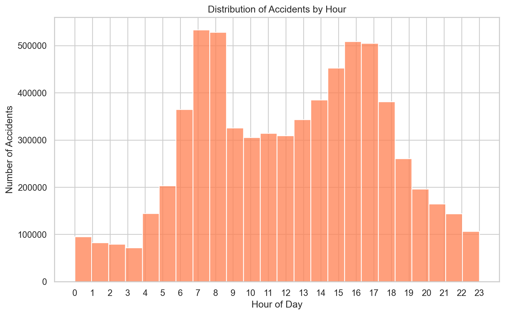
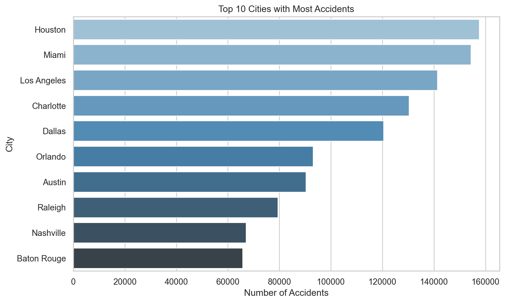

UNCOVERING PATTERNS IN US ACCIDENTS - MSDS 597 Project (Group 17)
Data Exploration
This document explores the dataset and provides insights through visualizations.
1.Distribution of Accidents by Hour
This plot shows the distribution of accidents across different hours of the day. It helps identify when accidents are more likely to occur.
Variables:
- X-axis: Hour of the day (from 0 to 23) — This represents the time of day when accidents occurred.
- Y-axis: Number of Accidents — The total count of accidents that happened at each hour of the day.
The plot reveals patterns in accident occurrences based on time, helping to identify peak accident hours.
2.Top 10 States with Most Accidents
This plot visualizes the distribution of accidents across the top 10 states. It helps identify which states have the highest accident rates.
Variables:
Labels: States (e.g., “California”, “New York”)
Values: Number of Accidents — The number of accidents that occurred in each state.

3.Top 10 Cities with Most Accidents
This bar plot shows the top 10 cities with the most accidents. It gives insights into the cities where accidents are most frequent.
Variables:
X-axis: Number of Accidents — The total count of accidents in each city.
Y-axis: Cities — The names of the cities.

4.Top 10 Weather Conditions during Accidents
This bar plot displays the top 10 weather conditions under which accidents occurred.
Variables:
X-axis: Weather Conditions (e.g., “Clear”, “Rain”)
Y-axis: Number of Accidents — The number of accidents that occurred under each weather condition.

5.Temperature Distribution during Accidents
This box plot compares temperatures during accidents on weekdays and weekends.
Variables:
X-axis: Is_Weekend (1 for Weekend, 0 for Weekday)
Y-axis: Temperature (Fahrenheit) — The temperature at the time of the accident.

6.Accident Locations in USA
This scatter plot visualizes accident locations across the United States using geographic coordinates.
Variables:
X-axis: Longitude — The geographic coordinate representing the east-west position.
Y-axis: Latitude — The geographic coordinate representing the north-south position.

7.Interactive Plot: Number of Accidents by Hour
This interactive plot shows the number of accidents across different hours of the day. It’s interactive, so you can hover over each bar to see the exact number of accidents.
Variables:
X-axis: Hour of the Day — The time of day when accidents occurred.
Y-axis: Number of Accidents — The total number of accidents that occurred at each hour.